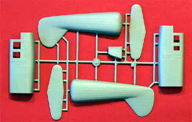

Special Hobby Focke Achgelis Fa 223 Drache
Kit #48020
MSRP $48.95
Images and text Copyright © 2006/2008 by Matt Swan
Developmental Background
Designed for the Deutsche Lufthansa as a six seat passenger aircraft this odd looking bird first flew in August 1940. With the war already in progress it was decided to utilize it in a military format. It was planned to use it for rescue operations, antisubmarine patrols, reconnaissance and cargo transportation. Powered by one 1,000-horsepower radial piston engine it could reach a maximum speed of 109 miles per hour, could carry two 250kg bombs, was equipped with a rescue cradle and winch, and had a reconnaissance camera and a jettisonable 300 liter auxiliary fuel tank.
Initially 30 pre-production aircraft were ordered but only ten were completed before the factory was destroyed by Allied bombs. A new plant was constructed near Stuttgart where seven more aircraft were manufactured. In early 1942 the type was finally considered ready for operational testing and trials began. Encouraged by early results where the aircraft assisted ground troops an additional 100 aircraft were quickly ordered but once again, Allied bombs cut this production run short after only eight had been assembled and six of these were destroyed in the raid. Yet another factory is put up, this time in Berlin with a projected production capacity of 400 aircraft per month but only a single unit was produced before the war ended.
In the end only ten or eleven aircraft ever made it to operational status but these established several notable records like being the world's first helicopter to achieve production status and to be the first helicopter to fly across the English Channel. However, when the war ended the story of the Fa 223 did not, development was continued in France as the SA 3000 and in Czechoslovakia units were assembled from salvaged parts as the VR-1.
The Kit
For such a historically noteworthy aircraft I find it somewhat amazing that until now, it had never been produced in 1/48 scale injection. The model arrives is a compact lift top box with four sprues of light gray, slightly soft plastic parts and a single sprue of clear parts all packaged in a single poly bag. This style of packaging caused the main canopy piece to be broken off the sprue creating a small fracture dead center in the front pane and several small abrasions were found on the top of the canopy. The clear parts do show excellent clarity and well defined raised frame lines. They also fit well to the fuselage piece.
 The kit also includes some really nice photo etched pieces, two frets with one of them being precolored. The colored set covers the instrument panels, instrument details and seat belts while the second set covers additional interior and exterior details. Instrument panels are also provided as pure resin parts. You could dispose of the PE panels and paint the raised faces on the resin part or sand the face down, attach the PE pieces and obtain a little better depth to the parts. The little bag of resin details also includes rotor heads and transmission boxes that display a good level of detail and standard pour stubs.
The kit also includes some really nice photo etched pieces, two frets with one of them being precolored. The colored set covers the instrument panels, instrument details and seat belts while the second set covers additional interior and exterior details. Instrument panels are also provided as pure resin parts. You could dispose of the PE panels and paint the raised faces on the resin part or sand the face down, attach the PE pieces and obtain a little better depth to the parts. The little bag of resin details also includes rotor heads and transmission boxes that display a good level of detail and standard pour stubs.
Returning to the gray plastic pieces the surface of all parts is nicely smooth with not sink marks and there does not appear to be any flash on the parts sprues. Inside the fuselage forward section there are several small injector pin marks that will have to be removed. Interior detail looks to be outstanding on this kit with lots of fine tubular structure and instrument detail. With the large clear greenhouse this is a definite plus for the kit. Exterior fabric detail for the aft section looks good and we gets lots of finely cast tubular structures to support the rotor housings. I think one of the challenges to this kit will be removing all these pieces from the sprue without causing damage, followed by lining them all up properly. Some supporting cable structure will have to be scratch built from fine wire, stretched sprue or invisible thread but placement for all this is shown in the instructions. All the large kit pieces fit together well during test fitting (no alignment pins on this kit) but it does look like attaching the forward fuselage section to the aft section could be a little tricky, if fact, it looks like there could be quite a bit of tricky assembly to this kit.
Parts inventory gives us eighty four pieces in gray polystyrene, eight clear parts, four resin pieces, thirty three pre-colored photo etched pieces and thirty one regular photo etched pieces for a grand total of one hundred sixty pieces in the box.

You may click on the small images above to view larger pictures.
Decals and Instructions
Instructions come as a nice little booklet of fourteen pages beginning with a good historical back ground of the type in both English and Czech. Following this is a complete parts map. There are eighteen exploded view assembly steps that are very well illustrated and include several color call-outs by Gunze-Sangyo color numbers only.
Four full pages are devoted to exterior painting and decal placement for four different units. In these steps exterior colors are given by Gunze-Sangyo numbers, by color name and by RLM number.
The kit decal sheet is a small sheet that includes the basic unit marking for four aircraft. The decal sheet does not include and service stencils or warning markings which seems somewhat odd for a German aircraft. The decals appear to be nicely thin and have good color density and print registration. Swastikas are provided in a politically correct manner being in two pieces that we have to assemble. Previous experience with Special Hobby decals indicates they behave well with standard setting solutions and are not prone to silvering.
Conclusions
It seems that this kit should appeal to a wide range of modelers covering both the World War Two fans and fans of helicopters. The kit seems to be well engineered and test fitting shows a generally good fit of all major components. Interior details are very good as are exterior details. Kit decals seem adequate but the lack of service stencils makes me hopeful that the aftermarket will soon come to our rescue with a better marking sheet. Considering all the fine tubular structure that needs to be assembled I don't feel this kit is appropriate for beginners but should present little problem to more accomplished modelers. This is a historically significant aircraft and a kit that I recommend you have in your collection.
Construction 9/15/08
About four months ago I decided to start this build - I had a taste going for a helicopter and figured this would be just the thing. Now four months later I have a completed model and a bad taste in my mouth called Special Hobby.
I started this little train wreck with the cockpit and as with any train headed for hard times the trip started out fine with no indications of the trials and tribulations to come. The tubular framing for the cockpit area was a little fiddly and the instructions were not very good for color call-outs but I managed to muddle through. The kit contains both a resin set of instrument panels and a PE/acetate set. I elected to use the PE set and added my own instrument backings made from pieces of plastic rod. I also added fine wires to the back of the panels as they were highly visible when completed. In retrospect I probably could have saved myself some work by sanding the faces off the resin panels and gluing the backings onto the PE panels - oh well, at least I have some nice resin panels for the spares box.

You can click on these small images to view larger pictures
I painted the interior RLM-66 and used a variety of other Luftwaffe military colors to detail the interior. The completed cockpit assembly slid into the front fuselage with no serious difficulty. I masked the side window panels and glued them in with clear parts cement. So far everything was looking good and I was thinking I was well into a pleasant build - soon the dark clouds would begin to build on the horizon. I glued the aft fuselage halves together and cleaned up the seam. Now I started trying to figure out just how I was going to attach this piece to the front piece on the four delicate little studs the kit gives you. This may be accurate to the aircraft but is a real bugger. I ended up gluing the four points of the mounting frame to the tail assembly, letting that cure overnight then placing medium blobs of superglue inside the forward fuselage, sliding the assembly into place and then running some accelerator into the area to lock it in position. During the rest of the assembly process I managed to break two of these points free twice and had to reglue them.
Now it was time to tackle the rotor booms and by this time I could see the clouds beginning to form on the horizon. I don’t know what kind of drugs these guys were doing when they established the size of the boom pieces but they were most definitely perception altering in nature. I had to cut about 3mm off the internal V members that ran from the landing gear to the upper boom. I had to drill out the lower mounting bracket on both sides to accept the main gear shaft. Since the parts are not numbered on the sprue and I had already found some discrepancies in the printed parts map I was left guessing which boom pieces were right and which were left (very dark clouds now and some rumblings of thunder in the distance). Once the booms were completed I tried to test fit them to the fuselage - nothing matched up to the mounting points and it was obvious that some of the main struts were too long (flash of lighting, crack of thunder, roar of train barreling towards rickety bridge in the darkness ahead). I also noticed that the rotor heads were too close together and at an incorrect angle. I cut down the mounting rods to achieve a more correct fit and space the rotor heads to a more realistic distance (based on limited surviving video of the aircraft). Getting somewhat frustrated with this I put the rotor booms back in the box and decided to work on that three piece front glazing.
I began the glazings with a dip in Future and a couple days to cure. Not that they needed that much time but I certainly did. I remember when I masked the front of my Do-217 with all its little panels - that was easier than this was. I spent a couple weeks working off and on getting things masked before I was able to actually glue something together again. I fit the upper section to the fuselage and everything looked fine. It was secured with some spots of superglue and seams were backfilled with clear parts cement. I test fit the bottom section to find about a 1.5mm step down to the fuselage (I think I can feel a cold rain on my back now). I held the lower section in place with tape then filled the step with Squadron white putty. Once this had dried I removed the clear part and added more putty to the bottom of the fuselage to fair it into the rest of the model. I sanded things down then cleaned up the mating edges with a diamond needle file.
I can't avoid it any longer - its time to attach those rotor booms. I glued them in place and spent some time making sure they were lined up properly and noticed how by changing the length of the lower boom rods the angle of the landing gear had changed from toe out to toe in (Thunder, Lighting, Rain, roaring train, leering conductor appearing from the darkened doorway "Ticket Sir?" a woman's shriek can be heard in the distance. The conductor does not seem to notice). Once the glue had set on the rotor booms I cut the top end of the gear struts free, cleaned up the cut, filled some small holes and repositioned the gear to return to a toe out orientation. Next comes the tail plane - this is a hugely delicate piece that broke free in my hands three times during the installation.
The fine pieces of invisible thread that I ran as cable supports actually are functional on this model. Without them that tail plane would snap off so quick you wouldn't know what happened. Anyway, at last I can start painting. I did not preshade this one but went right to an RLM-71 over RLM-65 and painted the whole thing. After the RLM-71 was on I darkened some paint and went over the few panel lines lightly to create some post shade. The model was coated with Future and the decals were placed. A sludge wash was put on the panel lines and wiped down. The boom rigging was all done with invisible thread drawn across a black magic marker glued in place using fine spots of medium superglue with accelerator. The prominent control cables that run down the forward booms were not included in the kit nor shown in the instructions so I had to scratch build those pieces. I tightened the threads up using a hot ember on the tip of a toothpick. As rough as this kit has been on me I was surprised that I did not melt off any threads (a break appears in the clouds and a ray of sunlight strikes the ground).
Now I need to build the rotors. I prepainted all the parts for the rotors using Alclad for the hubs and RLM-02 for the blades followed by a sludge wash. As I started to assemble the lower gearing on the rotor hubs none of the PE parts wanted to fit (ray of sunlight disappears, baby cries in next compartment, is that a face in the window?). There are two steel discs that are supposed to slide over a plastic strut on each rotor but the strut is too fat and is only about 5mm long, sanding that down without losing the parts was a challenge but was finally accomplished. Two days of jerking around with the rotors saw them complete and superglued to the rotor heads. Oh, did I mention this was a huge tail sitter? (Maniacal evil laughter sound right around the corner) Oh well - she is going to hang from the ceiling anyway so I'm not going to worry about it. Even if I wanted I don't think I could do anything about it as there is nowhere in the nose to hide a counter weight. Enough is enough, I'm done with this one and will have to wait a long time before tackling another Special Hobby Kit. Now I am working on a Hasegawa Ki-100 and the sun is shining, little cute bunny rabbits are frolicking in the grass and I am working towards putting this build out of my mind - the clouds have passed.


{kind=link}
{kind=link}
{kind=link}
{kind=link}
{kind=link}
{kind=link}
{kind=link}
{kind=link}
{kind=link}
{kind=link}
{kind=link}
{kind=link}
{kind=link}
{kind=link}
{kind=link}
{kind=link}
{kind=link}
{kind=link}